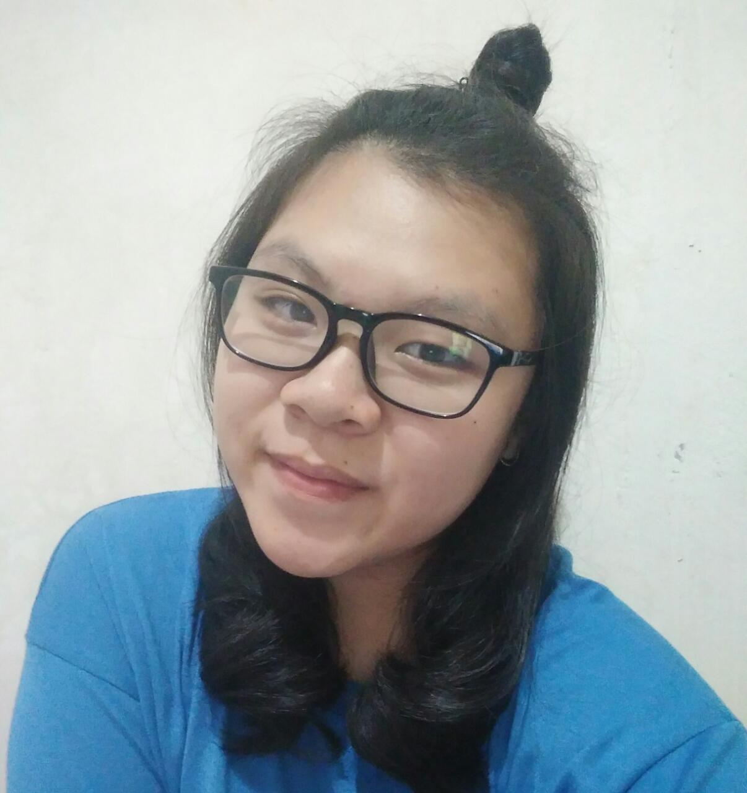

Salam kenal! Namaku Fransisca Andriani Liberto. Aku biasanya dipanggil Acu, Fransisca, ada juga yang memanggilku Sisca. Sekarang aku duduk di kelas 11. Aku bersekolah di salah satu sekolah di Bogor, yaitu SMK-SMAK Bogor. Sekolahku berkejuruan di bidang analisis kimia dan berlangsung selama 4 tahun. Penasaran dengan informasi menarik lainnya tentang sekolahku? Kalian bisa klik tombol ini ya!
Setelah kalian mengenal sekolahku, kenalan denganku lebih lanjut yuk! :)

Nahh, kali ini aku mau cerita sedikit tentang hobiku. Aku suka memasak sejak aku masih SD. Dulu aku senang sekali kalau mamaku mengajakku untuk memasak bersama. Bahkan, dulu aku berkeinginan sekolah mengambil jurusan tata boga dan menjadi chef yang hebat. Namun aku ternyata di terima di SMAKBO yang juga merupakan sekolah impianku saat aku kelas 7. Banyak ya sekolah impianku hehehe. Sekarang, aku lebih sering memasak dengan adikku. Sekali-kali, kita membeli bahan sendiri dan memasaknya hanya untuk kita berdua. Kita senang memasak apapun itu jenis masakannya, appetizer, main course, bahkan dessert. Kita juga suka membuat minuman yang sedang hits, seperti boba hehehe. Mungkin itu saja yang dapat aku ceritakan tentang hobiku.
Jumpa lagi lain waktu!